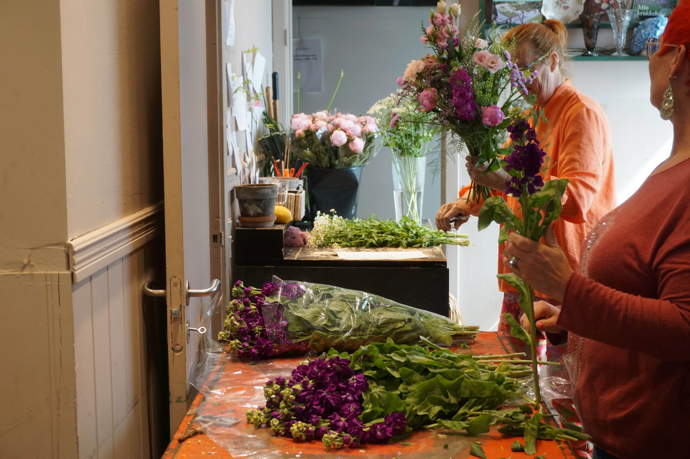
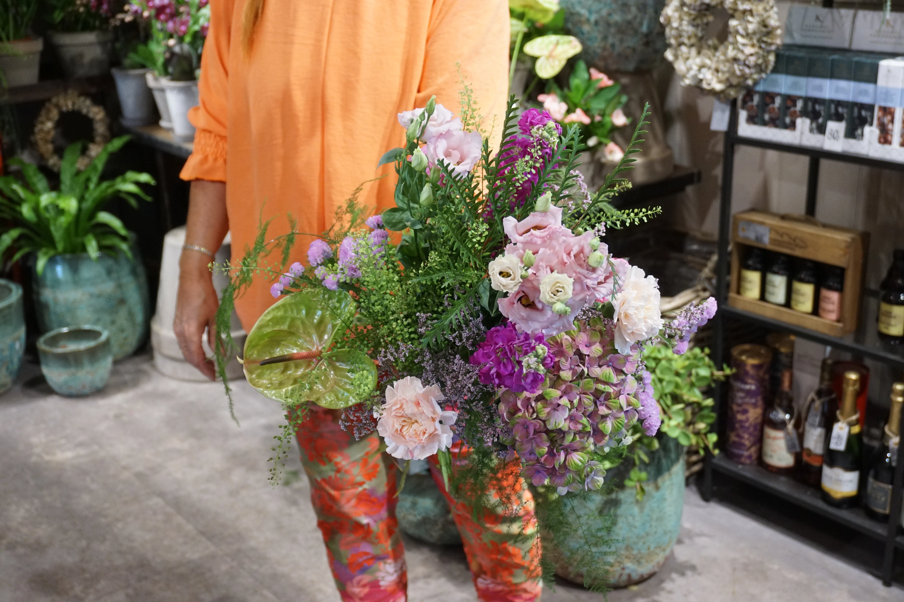
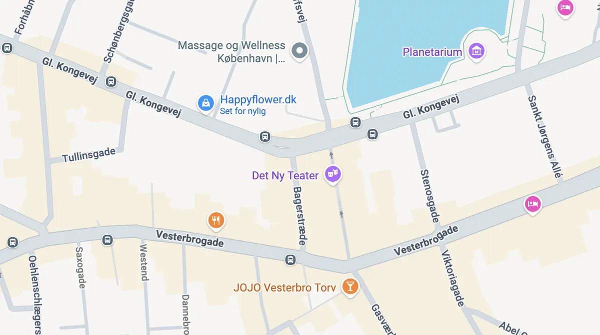

Vores vision
Happyflower.dk er en online blomsterbutik med levering i Storkøbenhavn af blomster, planter, vin og chokolade. Siden 2012 har vi skabt unikke buketter med fokus på kvalitet og friske blomster, håndbundet af uddannede blomsterdekoratører.
I 2015 åbnede vi vores første fysiske butik på Frederiksberg. Vores mission er at sprede glæde med omtanke, smukke blomster og gøre det nemt og hurtigt at sende en kærlig tanke til dem du holder af. En vigtig byggesten for Happyflower er vores fokus på ansvarligt dyrkede blomster, reducere spild og prioritere sæsonbaserede buketter. Vores mål er at skabe smukke buketter med omtanke for både mennesker og miljø.

I hele Storkøbenhavn
Blomster, gaver og mere
Bevidste valg
Tryg og nem betaling

Vi tilbyder
Blomster af bedste kvalitet Hos Happyflower.dk får du friske blomster af højeste kvalitet. Vores moderne og sæsonbetonede buketter bindes af erfarne blomsterdekoratører med fokus på smukke blomster frem for overflødigt grønt. Det sikrer høj kvalitet og flotte buketter - hver gang. Chokolade fra det velsmagende summerbird Summerbird er kendt for eksklusiv chokolade i verdensklasse, fremstillet af udsøgte råvarer, unikke smagskombinationer og elegant emballage.
I vores sortiment finder du nøje udvalgte gaveæsker og dragerede mandler fra Summerbird - perfekt til enhver smag. Vin fra udvalgte vinproducenter Hos Happyflower.dk finder du nøje udvalgte kvalitetsvine fra anerkendte vinproducenter verden over. Vores sortiment omfatter blandt andet rødvin, hvidvin, rosé, champagne, cognac og whisky. Alle flasker leveres i gratis gavekarton med et personligt kort.
Find os
Butik
Butik Gammel Kongevej 70, Frederiksberg C.
Åbningstider
Mandag-Fredag: 10.00-18.00. Lørdag: 10.00 - 15.00
Telefon åbningstider
Tlf. +45 42 66 50 02 Tirsdag - fredag: 10.00 - 15.00.
Kontakt
Har du spørgsmål, eller står du og skal bruge blomster til et særligt arrangement, så kontakt os via telefon eller mail:kundeservice@happyflower.dk
